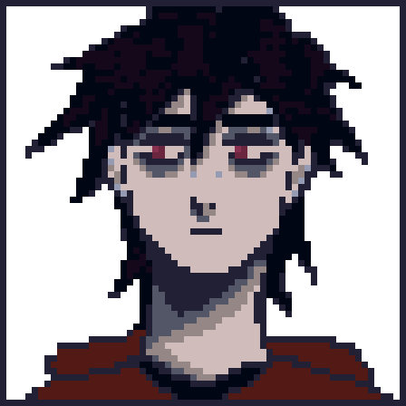
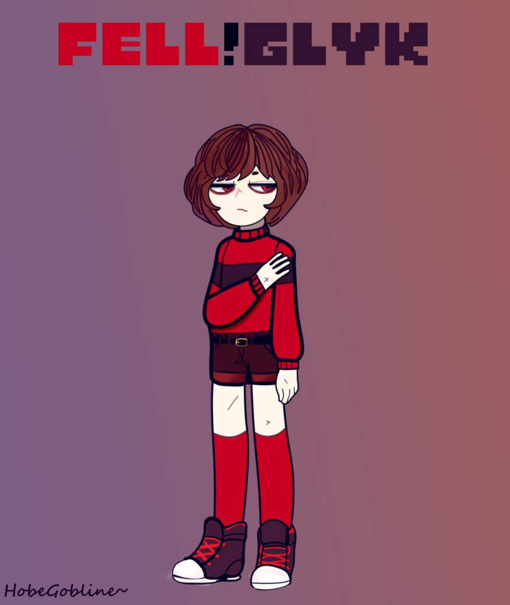

Кэйсси Райдер
«Кажется, я совсем устал от жизни, только начинаю жить по другому, как резко я падаю лицом в грязь, выбираюсь из грязи и уже падаю на лезвия »
Кэйсси Райдер (англ. Cassy) — альтернативная версия Глюка Райдера из жестокой вселенной FellVerse. Пройдя тяжелый путь от забитого подростка до защитника собственной семьи, он обрел покой в карманной АУ вместе со своей возлюбленной Викой и дочерью Селиной.
Содержание
История
Истоки в FellVerse: Жизнь в страхе
Детство Кэйсси (в то время известного как Красноглазик) прошло в суровых и жестоких реалиях альтернативной вселенной FellVerse. В мире, где доброта приравнивалась к слабости, а выживал лишь сильнейший, юный "Глюк"(ведь именно так называли его в той АУ) кардинально отличался от своего окружения. Он тянулся к музыке, мечтал о настоящей дружбе и искренне пытался найти общий язык с окружающими. Однако его мягкий характер и недостаток физической жестокости сделали его идеальной мишенью для насмешек ровесников.
Дома ситуация была не лучше: его старший брат, Том, вместо защиты и поддержки одаривал Кэйсси лишь побоями и унижениями. Каждый раз, когда Красноглазик искал у брата утешения или братской любви, он получал в ответ агрессию. Эти годы постоянного страха и подавления глубоко травмировали психику подростка, заронив в него семена острой неуверенности в себе и ненависти к собственной слабости.
Открытие Мультивселенной и Цена Свободы
Всё изменилось, когда Кэйсси исполнилось 16 лет. Случайная встреча с таинственной Код открыла ему глаза на существование Мультивселенной. Осознав, что за пределами его адского мира существуют нормальные вселенные, Кэйсси предоставил Код временное жилье, а сам решился на отчаянный шаг — побег. Воспользовавшись отсутствием Оригинального Глюка, он сбегает в классическую АУ.
Заблудившись и случайно напившись, Кэйсси находит убежище у МС. Страх перед возвращением к брату был настолько велик, что он решил остаться там. Однако Том выследил беглеца и попытался забрать его силой. МС вступился за парня, отказавшись отдавать его на растерзание. В ходе тяжелого поединка МС начал проигрывать, но в этот момент в конфликт вмешались высшие сущности — Комедия и Трагедия. Они даровали Кэйсси свободу, но цена оказалась кровавой: в обмен на возможность жить в новом мире, Том и Элизабет были убиты.
Знакомство с Алисой и Новая Семья
Начав новую жизнь, Кэйсси случайно знакомится с Алисой (Лизи) во время невинной игры в снежки. Девушка быстро занимает главное место в его сердце — впервые в жизни он чувствует себя нужным и любимым. В этот же период Кэйсси обретает настоящую опору в лице других альтернативных версий Глюка. Вся эта разношерстная компания становится для него настоящей семьей и мощной группой поддержки, где Черри и остальные всегда готовы прикрыть ему спину. Именно тогда происходит и первая, весьма неловкая встреча Кэйсси с пьяной 14-летней суккубшей Викой. Он защищает её от неприятностей, но мягко отшивает, так как предан Алисе.
Счастье оказалось недолгим. Во время музыкального турнира с Гвен на их мир совершается чудовищное нападение. Ньюв, объединившись с жестоким Найтом и одной из мёртвых, искаженных версий Глюка — Хоррором, начинают вырезать АУ. Вступив в неравный бой, Найт почти убивает Алису, но Кэйсси бросается под удар, жертвуя собственной жизнью ради любимой.
Музыкальная группа MGQ и Предательство
Смерть оказалась не концом. Благодаря помощи Арианы, Кэйсси возвращается к жизни. Оправившись от шока, он воссоединяется с Алисой и пытается наладить нормальный быт. Он даже вступает в музыкальную группу MGQ (Music Glitch Quartet) вместе с Глюком Райдером и другими альтернативными версиями. Казалось бы, черная полоса пройдена.
Но первый же концерт группы оборачивается катастрофой. Прямо во время выступления Алиса предает их всех: она крадет Код и сбегает. Оригинальный Глюк не успевает ей помешать. Когда Кэйсси наконец находит её, надеясь всё уладить, он сталкивается с ледяной жестокостью. Алиса заявляет, что никогда его не ценила и искренне ненавидит. Разбитый вдребезги, Кэйсси в панике глюкопортируется прочь, оставляя позади всё, во что верил.
Падение на дно и Спасение
Предательство Алисы сталкивает Кэйсси в глубочайшую эмоциональную пропасть. К этому добавляется давление со стороны Гвен, которая жестко запугивает его, обвиняя в случившемся. У Кэйсси начинается тяжелейший нервный срыв. Не в силах справиться с душевной агонией, он прибегает к селфхарму, нанося себе глубокие порезы, и всерьез задумывается о суициде. Черри пытается вытащить его из этого состояния, но парень слишком сломлен.
В этот самый темный момент его жизни на пороге вновь появляется Вика. Увидев израненные руки Кэйсси, она бережно перевязывает их, завязывая бинты милыми бантиками. В откровенном разговоре выясняется, что Вика тоже проходила через подобный ад и мысли о самоубийстве. Две травмированные души находят утешение друг в друге. Кэйсси дает клятву: он будет бороться за жизнь, если Вика тоже не сдастся. Вскоре подростковые гормоны и эмоциональная привязанность делают своё дело, и они начинают жить вместе, став друг для друга главным смыслом существования.
Счастливый финал и Новая Трагедия
Жизнь с Викой приносит Кэйсси долгожданный покой. Несмотря на биологическую разницу, их союз приводит к рождению дочери — Селины. Желая защитить родителей от жестокости Мультивселенной, Селина использует магию маски Комедии и создает закрытую карманную АУ, заперев их в идеальной утопии.
Однако этот мирный финал был разрушен спустя несколько лет. В их идеальный мир вторгается Амадей, использующий силу маски Трагедии и способности Ньюва. В ходе жестокого нападения Амадей тяжело ранит Селину и забирает её маску, разрушая защиту. Амадей сбегает, оставляя Кэйсси и Вику запертыми в медленно разрушающейся иллюзии, неспособными помочь своему ребенку.
Личность и характер
Личность Кэйсси прошла колоссальную трансформацию с депрессивного периода. Если раньше его знали как глупого, саркастичного подростка, который скрывал внутреннюю боль за словами и отчаянными попытками привлечь внимание, то нынешний Кэйсси - это воплощение спокойствия и серьезности. Пройдя через годы испытаний и проработав свои самые темные внутренние темы, он перестал искать одобрения извне и нашел внутренний стержень.
Он стал намного тише и сдержаннее, предпочитая обдуманные действия пустым словам. Темы селфхарма и саморазрушения остались в далеком прошлом — он больше не пытается причинить себе вред, научившись ценить жизнь ради себя и своей семьи. Однако он сохранил высокую планку требований к самому себе: Кэйсси всё так же строг к своим поступкам и постоянно стремится стать лучшей версией того человека, которым он был когда-то.
- Осознанная серьезность: Его былой сарказм сменился глубокой рассудительностью. Он больше не «колется» иглами в общении, а старается быть опорой для тех, кто ему дорог.
- Семейные ценности: Став парнем Вики и отцом Селины, Кэйсси окончательно повзрослел. Теперь его приоритет — защита близких, а не собственные внутренние метания.
- Внутренняя дисциплина: Несмотря на то, что он больше не ненавидит себя так открыто, он остается своим самым суровым критиком, считая, что всегда есть место для роста и исправления старых ошибок.
- Миротворец: С возрастом он стал ценить тишину и покой, стараясь решать конфликты не через вспыльчивость, а через холодный разум, хотя его былая ярость всё еще может проснуться, если кто-то тронет его семью.
Внешность
Внешность Кэйсси — это прямое отражение его пройденного пути. В отличие от оригинального Глюка, он обладает более густой, кудрявой копной бордовых волос и пронзительными, большими красными глазами. Раньше в его взгляде читались страх или агрессия, но теперь там преобладают спокойствие, осознанность и легкая меланхолия.
Он обладает худощавым и утонченным телосложением, но при этом выглядит как полностью сформировавшийся двадцатилетний юноша.
- Одежда: Кэйсси предпочитает комфортный, неброский стиль музыканта. Его визитная карточка — свободный красный свитер с широкой горизонтальной тёмно-фиолетовой полосой на груди и рукавах, а также простые тёмные джинсы.
- Особые приметы (Бинты): На его кистях и запястьях всегда плотно намотаны белые бинты. Это не просто элемент сценического образа, а необходимость — под ними скрываются старые шрамы от порезов. Теперь эти бинты служат символом того, что он пережил свои самые темные времена, а также напоминанием о заботе Вики.
Способности и Арсенал
Боевой стиль Кэйсси отличается от оригинального Глюка: он полагается на скорость, нестандартные атаки и острые эмоции, которые напрямую влияют на его магию.
- Глюкопортация: Стандартная для всех его альтернативных версий способность к мгновенному перемещению в пространстве.
- Разноцветные ЛА и ГлБ: В отличие от оригинала, Кэйсси чаще использует разноцветные Лучи Атаки (ЛА), а не массивные Глюк-бластеры. Цвет его глаз не меняется в зависимости от эмоций, как у оригинального Глюка, оставаясь ярко-красным.
- Владение ножами: Основное оружие ближнего боя.
Слабости
Несмотря на то, что Кэйсси проработал свои главные психологические проблемы, у него остались уязвимые места, характерные для его новой, более зрелой личности.
- Синдром гиперответственности: Из-за того, что он теперь слишком строг к себе, любая неудача в роли защитника семьи бьет по нему сильнее, чем любое физическое ранение.
- Чрезмерная самокритика: Он склонен изводить себя морально, если считает, что поступил недостаточно «правильно» или «мудро», иногда завышая планку до недостижимых высот.
- Слабая регенерация: Физическая особенность его тела никуда не делась — он всё так же хуже других Глюков восстанавливается после тяжелых повреждений.
- Уязвимость через близких: Весь его нынешний покой держится на безопасности Вики и Селины. Любая угроза им способна выбить его из равновесия, заставляя действовать на пределе сил, что может привести к магическому истощению.
Связи с персонажами
Глючная Семья
- Глюк Райдер: «Забавно, что ты всё же попадал в эту АУ...мог бы и подольше остаться»
- Черри Райдер: «Я даже не знаю, как ты сейчас...наверняка всё так же живёшь с своим братом один, надеюсь хоть музыку не бросил»
Друзья
- МС: «Спасибо, что...помогал мне...мне это очень ценно...я рад был тебя тогда встретить»
- Код: «Вроде как....когда я был ещё в своей АУ, ты...была в порядке? Ну...в любом случае, надеюсь, что сейчас тебе хорошо»
- Ариана: «Ты тогда меня спасла и...спасибо тебе. Охраняй Глюка, он...не далеко я так думаю, от меня ушёл..или я от него?»
- Джеррими Райс: «Я видел тебя на концерте...вроде бы ты парень Чанзи...ну, во всяком случае она была так рада тебя видеть»
- Чанзи Райс: «Спасибо тебе, что..тоже помогала и...я рад, что у меня такая подруга есть»
- Кара Дримур: «Я мало что о тебе знаю...в живую не виделись особо...но по словам Вики...Она тебя обожает»
- Роб: «Ты тот самый...быстрый демон? Ну...Ам..Да?»
Враги
- F!Том: «Ублюдок....Тебе одной-то смерти мало...Уверен, тебя даже сам Ад бы не принял, сослав ещё ниже, в самое пекло. Там тебе и место, там ведь все такие сильные как ты, не правда ли, братец?»
- Лиза: «...Сгори уже....и просто заткнись....Я ненавижу тебя»
- Азриэль Дримур: «Жалкий, ты не далеко ушёл от моего Братца. Ты столь сильно требуешь силы и контроля, быть может...вам двоим просто собственных сил и стараний не хватает, вы НАСТОЛЬКО жалкие?»
- Амадей Карс: «Я найду тебя....И поверь, тебе это не понравится, я найду и ты пожалеешь, что тронул мою Дочь. »
Интересные факты
- Это игровой Кэйсси?: Нет, это не Кейсси из игры Revenhell. Это два разных персонажа. Это Кэйсси из мира Эйферис РП. И он отличается достаточно от Кэйсси из моей игры
- Музыкант: Кэйсси играет на Басу
- Младший Глюк.: Самый младший из Глюков, но зато теперь он опотный
- Открытый: Не умеет сдерживать эмоции и часто говорит то, что думает
- Чёрный Юмор: Обожает чёрный юмор и саркастические шутки
- Не умеет врать: Ужасный лжец, не умеет лгать и никогда не пытался
- Вина: До сих пор винит себя за то, что не смог дать отпор Лизе или Брату
- Игра: Изначально, Кэйсси чисто был для меня просто депресивной версие Глюка. Но затем, он стал причиной создания игры Revenhell и стал главным героем, хоть и сильно поменял его дизайн и немного характер. Но, любовь к басу и многие аспекты жизни остались.
Галерея

